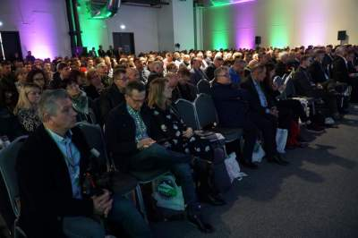

Konferencja VII Narodowe Wyzwania w Rolnictwie w obiektywie

Tegoroczna, VII edycja konferencji "Farmera" Narodowe Wyzwania w Rolnictwie ponownie cieszyła się ogromnym zainteresowaniem. W sumie trwającym przez cały dzień kilkudziesięciu wykładom, prezentacjom i debatom przysłuchiwało się ponad 1200 osób. Zabaczcie jak to wyglądało w obiektywie.
Zapraszamy do fotowycieczki po VII konferencji „Narodowe Wyzwania w Rolnictwie”, która w tym roku odbyła się w nowym miejscu, w Centrum Targowo-Kongresowym Global Expo. Nie była to jedyna nowość. W programie pojawiły się nowe akcenty, m.in. specjalny blok tematyczny „Bez Pługa”, a także sesja „Rolnicy w social mediach”. Obie cieszyły się ogromnym zainteresowaniem. Oczywiście, nasi goście mogli wybrać znacznie więcej ciekawych tematów. W kilkudziesięciu dyskusjach, wykładach i prezentacjach rozmawialiśmy o różnych ważnych dla rolników zagadnieniach. Nie zabrakło analizy bieżącej sytuacji na globalnym rynku żywności, porad ekonomicznych, wskazówek agrotechnicznych i tych dotyczących produkcji zwierzęcej. Dziękujemy wszystkim za przybycie i aktywny udział, a tych którzy nie mogli być z nami 7 listopada zapraszamy do obejrzenia galerii, a także do śledzenia wszystkich szczegółowych relacji z tej konferencji w naszym portalu. Dziękujemy również sponsorom, którzy pomogli w zorganizowaniu tego wydarzenia.